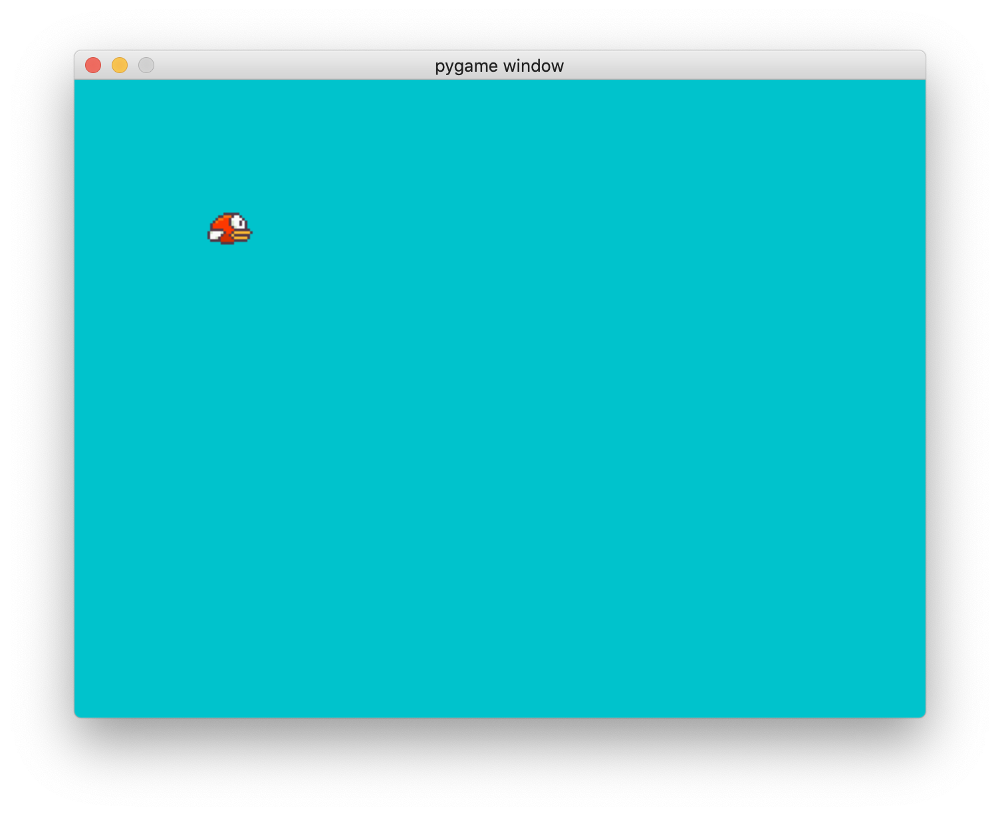
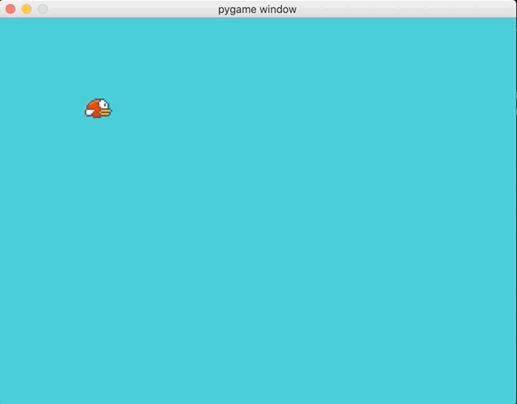
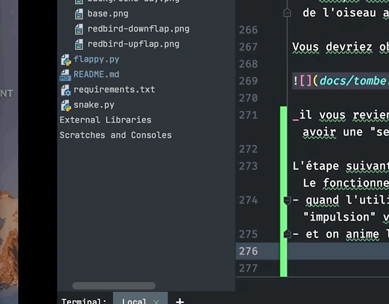

Ce second exemple - pour les rapides - va nous permettre de nous confronter à un cas plus compliqué de jeu vidéo: - l’espace de jeu n’est plus “discret”: on n’avance plus case après case mais “continuement” à une vitesse donnée - on va afficher des images et non des simples carrés de couleur - on va devoir se poser la question de la collision entre l’oiseau et les éléments du décor
Il est semblable au code de démarrage précédent:
import pygame as pg
BG_BLUE = (0, 195, 204)
pg.init()
screen = pg.display.set_mode((640, 480))
clock = pg.time.Clock()
running = True
while running:
clock.tick(30)
# 1. lecture des évênements
for event in pg.event.get():
if event.type == pg.QUIT:
running = False
# 2. actions
# 3. rendu
screen.fill(BG_BLUE)
pg.display.update()
pg.quit()La première action à mener est de dessiner notre oiseau (de malheur ?). Pour dessiner une image en pygame, deux actions sont nécessaires:
on doit charger l’image depuis un fichier, par ex.
puis on l’affiche, en donnant les coordonnées de son coin supérieur gauche:
les images nécessaires sont disponibles ici https://github.com/ue12-p21/python-advanced/tree/main/tps/games/images
vous devriez avoir un rendu semblable à celui-ci:

Il faut maintenant faire bouger notre oiseau. Contrairement à l’exemple précédent, nous allons devoir utilisé un mouvement “continu”, c’est à dire caractérisé par: - l’accélération de la pesanteur (quelle unité ?) - la vitesse de déplacement horizontale de l’oiseau (quelle unité ?)
Pour cela nous allons avoir besoin d’une notion de temps. Celle-ci va nous être donné par l’objet clock (plûtot logique !) qui retourne à chaque appel à tick le nombre de millisecondes écoulées depuis la dernière invocation, soit:
du coup l’algorithme a réaliser est le suivant: - ajouter une variable pour la vitesse instantannées de l’oiseau - une constant pour la gravité - à chaque itération, mettez en jour la vitesse et la position de l’oiseau avant de l’afficher
Vous devriez obtenir quelque chose comme:

il vous revient d’adapter les différentes constantes pour avoir une “sensation” de jeu agréable
L’étape suivant est de définir une interraction avec l’oiseau. Le fonctionnement proposé est simple: - quand l’utilisateur clique sur espace, l’oiseau reçoit une “impulsion” vers le haut qui va combattre la gravité - et on anime l’oiseau en conséquence
Le résultat doit être semblable à:

à partir de là vous pouvez définir le reste, on vous invite à imaginer la suite…